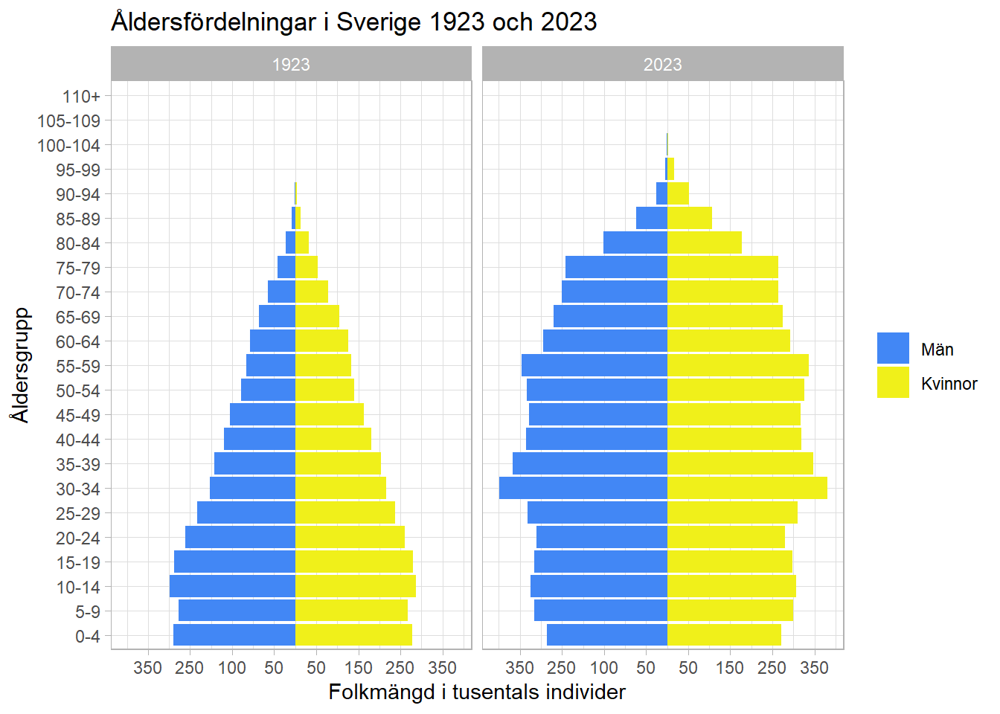

Visualiseringen kommunicerar orsaker till förtida död som andel av total antal år “förlorade” av förtida död. Utöver detta så används olika färger för att dela in dödsorsaker i tre olika kategorier samt används en färgskala för varje kategori som visar förändringen per år mellan 2005 och 2010 där en mörkare färg indikerar en ökning, på samma sätt indikerar en ljusare nyans att det skett en minskning.
b)
Storlek: År förlorade till följd av förtidada död som en andel av totalt antal förlorade år.
Färg: Kategorin som dödsorsaken tillhör.
Färgton: Förändring per år mellan 2005 och 2010.
c) Hur påverkar 3D-effekten möjligheten att jämföra areornas storlekar?
3D-effekten försvårar uppskattning av relativ storlek mellan olika sektorer i visualiseringen. Detta på grund av den introducerar ett djup i bilden.
d) Beskriv ytterligare styrkor/svagheter med visualiseringen utifrån olika principer om visualisering.
Heer & Bostock (2010) kommer fram till resultatet att area är bland det svåraste att uppskatta korrekt. Valet av typ av visualisering är både en styrka och svaghet och behöver sättas emot vad syftet för visualiseringen. 3D-effekten är visserligen snygg och gör att visualiseringen fånga uppmärksamhet men den hjälper inte till att tyda diagrammet eller att förmedla slutsatser.
Att visualiseringen visar år förlorade till följd av förtida död är borde uppmärksammas tydligare. “Total life-years lost” nämns enbart i en två små texter kopplada till två areor.
e) Kan du föreslå några förbättringar? Hur skulle detta kunna ha gjorts bättre?
Förtydliga att visualiseringen visar life years lost.
Inkludera siffror för att uppskatta storleken av vissa kategorier som är av intresse.
Använd en 2D-visualisering iställer för 3D.
Uppgift 2
library(tidyr)library(dplyr)
Attaching package: 'dplyr'
The following objects are masked from 'package:stats':
filter, lag
The following objects are masked from 'package:base':
intersect, setdiff, setequal, union
pyramid <-ggplot(data = population_1923_2023,aes(x = count,y=reorder(age, order),fill = sex))+geom_col(data =subset(population_1923_2023, sex=="men"),aes(x =-count)) +geom_col(data =subset(population_1923_2023, sex=="women"),aes(x = count)) +scale_x_continuous(breaks =c(-350000, -250000, -150000, -50000, 50000, 150000, 250000, 350000),labels =c(350, 250, 100, 50, 50 , 150, 250 ,350))+facet_grid(cols=vars(year)) +labs(title ="Åldersfördelningar i Sverige 1923 och 2023", x ="Folkmängd i tusentals individer", y ="Åldersgrupp", color =NULL ) +theme_light() +theme(legend.title=element_blank())+scale_fill_manual(values =c("#4287f5", "#f0f01a"), labels =c("Män", "Kvinnor"))pyramid

Uppgift 3
Visualisera förändringen i åldersfördelning i den svenska befolkningen under perioden 1860- 2023 med ggplot och datamaterialet population_1860_2023. Ni väljer själva hur ni på ett bra sätt ska visualisera utvecklingen.